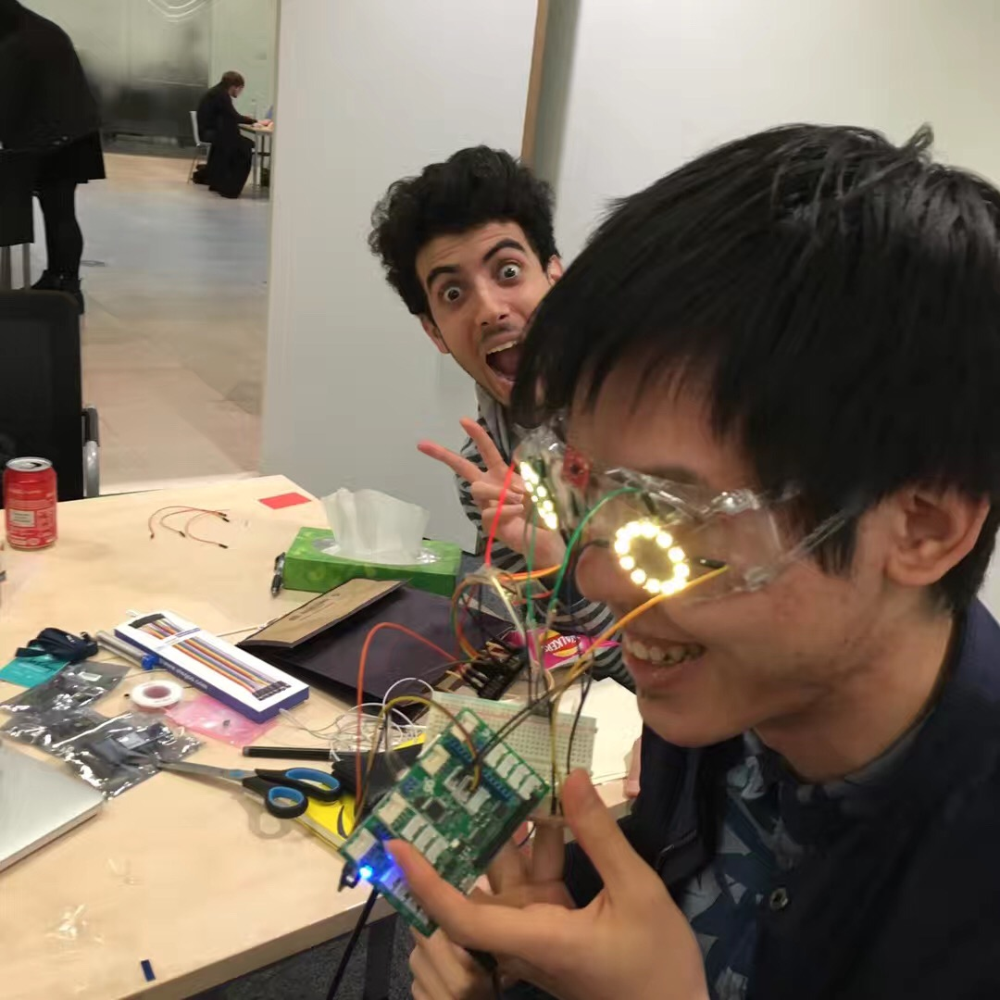

Voice-control rave goggles. Attached LEDs change colour and flashing pattern in response to vocal commands, ambient noise, bps of background music, motion and temperature.
The project, in terms of engineering, was a mix of wiring, processing thermometer and acceleration sensor signals, soldering and gluing, plus taking advantage of the Microsoft speech recognition API which was not incredibly reliable at the time. At least at the end of the slugfest we got to choose what colour we wanted to flash for each type of music, which was nice - until we decided to make that customisable.

^ A picture of the final product during preparation for the demo. During the final presentation the Arduino Nano was glued to the goggle casing. It was not very pleasant.
Nov. 2017, Oxford Hack, Mathematical Institute